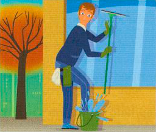
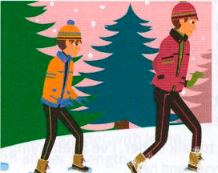
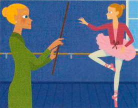

Bài tập
48.1 Nối mỗi thành ngữ ở cột bên trái với định nghĩa phù hợp ở cột bên phải.
1
have itchy feet
a
rất bận rộn
2
find your feet
b
khởi đầu tồi tệ
3
be under someone’s feet
c
cảm thấy quen thuộc với điều gì đó
4
land/fall on your feet
d
bồn chồn / muốn đi du lịch
5
get off on the wrong foot
e
hối hận về một quyết định
6
be rushed off your feet
f
giữ thực tế / không xa rời thực tế
7
get cold feet
g
luôn làm vướng chân
8
stand on your own two feet
h
may mắn/thành công
9
keep both feet on the ground
i
tự lập
48.2 Viết các câu liên hệ với cuộc sống của bạn sử dụng bất kỳ năm thành ngữ nào trong bài tập 48.1.
VÍ DỤ Tôi đã nộp đơn vào một trường đại học ở Mỹ và được nhận, nhưng sau đó tôi got cold feet (chùn bước/lo sợ).
48.3 Viết lại các câu sau đây sử dụng năm thành ngữ trong bài tập 48.1.
- Tôi nói rằng tôi sẽ tham gia cùng Tom trong cuộc diễu hành phản đối, nhưng sau đó đã hối hận và hoàn toàn không đi nữa.
- Tháng trước cô ấy rất bận rộn ở cửa hàng, nhưng cô ấy rất vui vì công việc kinh doanh tiến triển tốt.
- Cậu ấy sẽ phải học cách tự đưa ra quyết định của riêng mình khi giờ đây đã học đại học và không còn sống ở nhà nữa.
- Rosie và tôi đã có khởi đầu khá tồi tệ khi cô ấy mới gia nhập công ty, nhưng giờ đây chúng tôi đang làm việc cùng nhau rất ăn ý.
- Dạo này tôi cảm thấy bồn chồn (muốn đi đây đi đó). Tôi rất thích đi nghỉ mát kiểu du lịch bụi ở đâu đó.
48.4 Những bức tranh này gợi cho bạn nghĩ đến những thành ngữ nào?
1

2

3

48.5 Đúng hay sai? Đánh dấu (✓) vào ô thích hợp.
Đúng
Sai
1
Nếu bạn drag your heels (lề mề/trì hoãn), bạn cố tình hành động chậm chạp hoặc trì hoãn việc gì đó.
2
Nếu bạn put your foot down (kiên quyết/giữ vững lập trường), bạn yêu cầu ai đó một cách rất dứt khoát là phải hành động theo một cách cụ thể.
3
Nếu ai đó keeps you on your toes (khiến bạn luôn phải thận trọng/cảnh giác), họ giữ cho bạn luôn rất phấn khích.
4
Nếu bạn follow in someone’s footsteps (nối nghiệp/theo bước chân ai đó), họ là sếp của bạn và bạn làm việc dưới quyền họ.
5
Nếu bạn dig your heels in (ương bướng/khăng khăng giữ ý kiến), bạn rất quyết tâm không để bị thuyết phục làm điều gì đó mà bạn không muốn làm.
Đến lượt bạn
Sử dụng một từ điển tốt để tìm nghĩa của các thành ngữ này nếu bạn chưa biết chúng.
- foot the bill
- toe the line
- hard/hot on the heels of